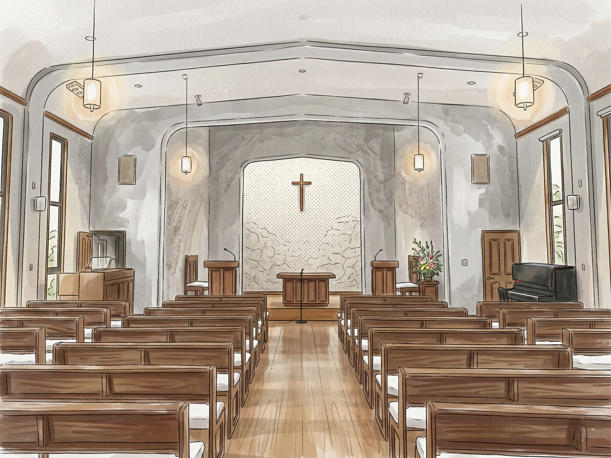
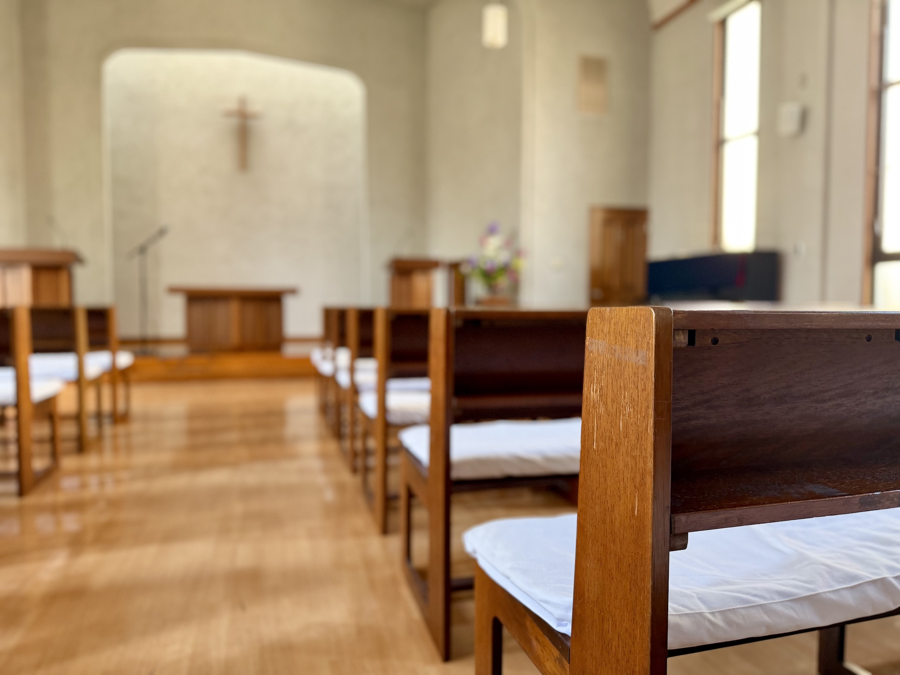

主日礼拝
鳥取教会の中心となる礼拝です。讃美歌を歌い、聖書を読み、説教を通して神の言葉を聴きます。初めての方も、クリスチャンでない方も、そのままご出席いただけます。
受付で週報をお渡しします。聖書や讃美歌は教会にも備えていますので、手ぶらでお越しいただいて大丈夫です。
それぞれの集いの雰囲気や内容を、初めての方にもわかりやすく紹介します。

鳥取教会の中心となる礼拝です。讃美歌を歌い、聖書を読み、説教を通して神の言葉を聴きます。初めての方も、クリスチャンでない方も、そのままご出席いただけます。
受付で週報をお渡しします。聖書や讃美歌は教会にも備えていますので、手ぶらでお越しいただいて大丈夫です。

幼児、小学生、中高生を中心に、聖書の話を聞き、祈り、賛美する時間です。子どもたちが神様の愛に触れながら、安心して過ごせる場を大切にしています。
初めて参加するお子さんも歓迎します。保護者の方も一緒に様子を見ていただけます。
その日の礼拝で読まれる聖書箇所を、礼拝前にゆっくり味わう時間です。聖書の背景や言葉の意味を学びながら、礼拝で語られるメッセージをより深く受け取る備えをします。
聖書を学び始めたばかりの方も参加できます。
礼拝や特別な礼拝で讃美をささげるための練習です。声を合わせて讃美することを通して、礼拝を共に支える喜びを分かち合っています。
参加については、礼拝後に教会の者へ気軽にお声がけください。

聖書を皆でじっくりと読み味わい、解説を聞き、お互いのための祈りや、世界の平和のための祈りを合わせる静寂のときです。
平日の落ち着いた時間に、聖書の言葉と祈りに心を向けたい方に開かれています。
礼拝後に、お茶やパンを囲みながら近況を分かち合う交わりの時間です。教会に初めて来られた方が、教会の雰囲気を知るきっかけにもなります。
参加は自由です。短い時間だけでも、どうぞ気軽にお過ごしください。
信仰の学びと交わりの時間を持ちます。聖書の言葉に耳を傾けながら、日々の歩みを分かち合う穏やかな集いです。
どなたでもどうぞご参加ください。
聖書に初めて触れる方にもわかりやすく、聖書の言葉やキリスト教の基本を学ぶ入門の集いです。疑問や感じたことを大切にしながら進めます。
礼拝に出席した後、そのまま参加できます。
学生や社会人の青年たちが集い、聖書の学びや分かち合いを通して共に成長を目指します。信仰、生活、学び、仕事のことを語り合える交わりを大切にしています。
男性信徒たちが人生経験や信仰の歩みを分かち合い、互いに励まし合う交流の場です。教会の歩みを支えながら、信仰と生活を共に考えます。
教会の維持・伝道の働きを円滑に進めるため、伝道委員会、社会委員会、教会報委員会、墓地委員会などの定例の委員会が行われます。
礼拝と交わりを支えるための、教会内の大切な奉仕の働きです。